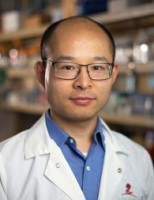

Principal Investigator

Zhaohui Gu, Ph.D.
- 2020-Present: Assistant Professor, Beckman Research Institute, City of Hope
- 2015-2020: Postdoctoral Research Associate, St. Jude Children's Research Hospital
- 2008-2014: Ph.D. Student, Shanghai Jiao Tong University
Dr. Gu earned his bachelor’s degree in biomedical engineering from Xi’an Jiaotong University in 2008, followed by a Ph.D. training in bioinformatics at the Shanghai Institute of Hematology, Shanghai Jiaotong University, under Dr. Zhu Chen. Following his doctoral training, he joined Dr. Charles Mullighan’s group at St. Jude Children's Research Hospital in Memphis, where he received extensive training in leukemia genomics. His work led to multiple highly impactful discoveries, which shapes the foundation for his independent research. In June 2020, he started his independent research career at City of Hope, focusing on B-cell development and acute lymphoblastic leukemia.